Hunter – Melee Survival with pet
Hunter – Melee Survival with pet
Off-meta DPS Split 7 / 11 / 33 (Beast Mastery / Marksmanship / Survival)
Keeps the pet and goes properly melee: Predator's Edge, Expose Prey into Mongoose Bite, Lacerating Strikes bleeds and Strider Kick, with Deflection, Deterrence and Counterattack for survivability.
Off-meta: not the usual pick, but a build that can work well in Forever. Try it, tweak it in the calculator and share your link.
Talents in this build
Hover or tap a talent to see what it does at that rank.
Beast Mastery · 7
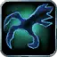
Deadly Aspects 5/5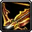
Focused Fire 2/2
Marksmanship · 11
 Lethal Attacks 5/5
Lethal Attacks 5/5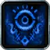
Efficiency 1/5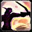
Careful Aim 5/5
Survival · 33
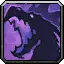
Improved Tracking 5/5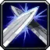
Deflection 4/5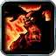
Savage Strikes 2/2- Survivalist 1/5
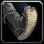
Surefooted 3/3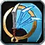
Deterrence 1/1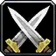
Predator's Edge 5/5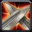
Counterattack 1/1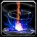
Resourcefulness 2/2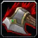
Expose Prey 2/2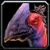
Strider Kick 1/1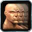
Lightning Reflexes 5/5 Lacerating Strikes 1/1
Lacerating Strikes 1/1
Leveling order
level 10 → 60
One talent point per level from 10 to 60. Follow it top to bottom.
| Level | Talent | Tree |
|---|---|---|
| 10 | Deadly Aspects 1/5 | Beast Mastery |
| 11 | Deadly Aspects 2/5 | Beast Mastery |
| 12 | Deadly Aspects 3/5 | Beast Mastery |
| 13 | Deadly Aspects 4/5 | Beast Mastery |
| 14 | Deadly Aspects 5/5 | Beast Mastery |
| 15 | Focused Fire 1/2 | Beast Mastery |
| 16 | Focused Fire 2/2 | Beast Mastery |
| 17 | Marksmanship | |
| 18 | Marksmanship | |
| 19 | Marksmanship | |
| 20 | Marksmanship | |
| 21 | Marksmanship | |
| 22 | Careful Aim 1/5 | Marksmanship |
| 23 | Careful Aim 2/5 | Marksmanship |
| 24 | Careful Aim 3/5 | Marksmanship |
| 25 | Careful Aim 4/5 | Marksmanship |
| 26 | Careful Aim 5/5 | Marksmanship |
| 27 | Efficiency 1/5 | Marksmanship |
| 28 | Improved Tracking 1/5 | Survival |
| 29 | Improved Tracking 2/5 | Survival |
| 30 | Improved Tracking 3/5 | Survival |
| 31 | Improved Tracking 4/5 | Survival |
| 32 | Improved Tracking 5/5 | Survival |
| 33 | Deflection 1/5 | Survival |
| 34 | Deflection 2/5 | Survival |
| 35 | Deflection 3/5 | Survival |
| 36 | Deflection 4/5 | Survival |
| 37 | Savage Strikes 1/2 | Survival |
| 38 | Savage Strikes 2/2 | Survival |
| 39 | Surefooted 1/3 | Survival |
| 40 | Surefooted 2/3 | Survival |
| 41 | Surefooted 3/3 | Survival |
| 42 | Deterrence 1/1 | Survival |
| 43 | Predator's Edge 1/5 | Survival |
| 44 | Predator's Edge 2/5 | Survival |
| 45 | Predator's Edge 3/5 | Survival |
| 46 | Predator's Edge 4/5 | Survival |
| 47 | Predator's Edge 5/5 | Survival |
| 48 | Counterattack 1/1 | Survival |
| 49 | Strider Kick 1/1 | Survival |
| 50 | Resourcefulness 1/2 | Survival |
| 51 | Resourcefulness 2/2 | Survival |
| 52 | Expose Prey 1/2 | Survival |
| 53 | Expose Prey 2/2 | Survival |
| 54 | Survivalist 1/5 | Survival |
| 55 | Lightning Reflexes 1/5 | Survival |
| 56 | Lightning Reflexes 2/5 | Survival |
| 57 | Lightning Reflexes 3/5 | Survival |
| 58 | Lightning Reflexes 4/5 | Survival |
| 59 | Lightning Reflexes 5/5 | Survival |
| 60 | Survival |
Other Hunter builds: Beast Mastery · Marksmanship Lone Wolf · Survival Lone Wolf · Beast Mastery leveling · Marksmanship PvP · Marksmanship with pet off-meta